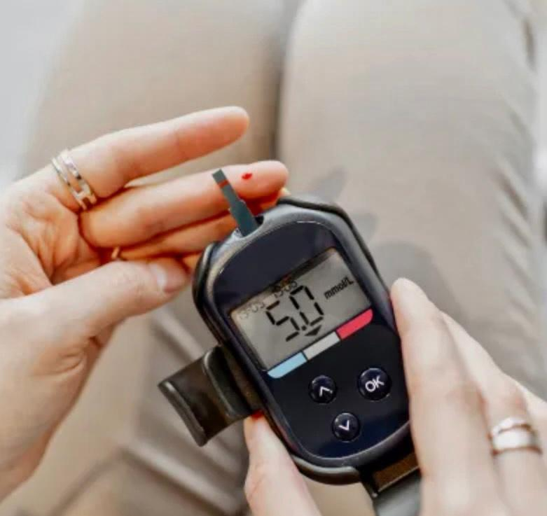
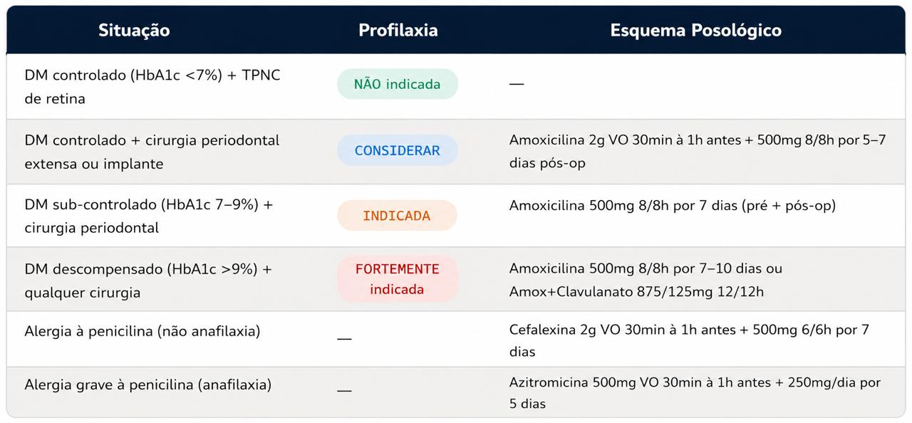
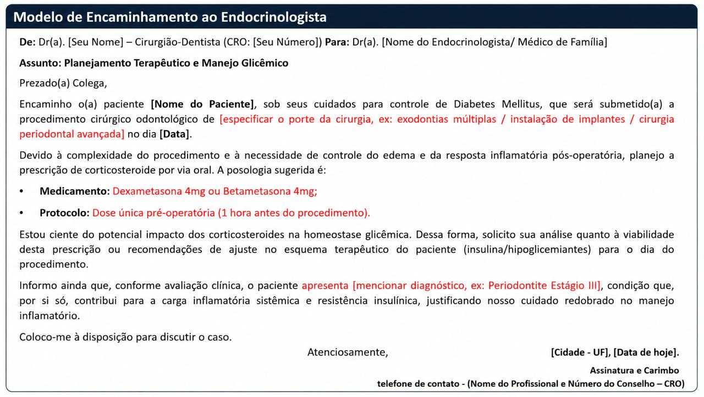
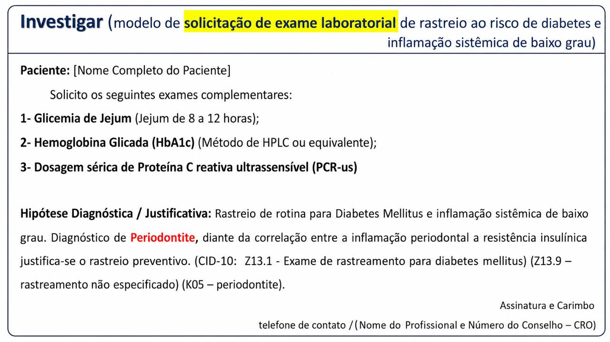

Manejo periodontal em pacientes com condições sistêmicas
Protocolos clínicos baseados em consenso científico (IDF/EFP, ADA, AHA, SBD, SBC) para o atendimento odontológico de pacientes com Diabetes Mellitus e Doença Cardiovascular. Triagem, condutas, profilaxia, emergências e ferramentas de uso clínico imediato.
Base documental
IDF · EFP · ADA · AHA · SBD · SBC
Aplicação
Consultório odontológico
Bloco I
Diabetes Mellitus
Relação bidirecional DM ↔ periodontite · avaliação, estratificação de risco, condutas e manutenção
Relação Bidirecional: Diabetes Mellitus ↔ Periodontite
Base do consenso — IDF/EFP (Sanz et al., 2018): DM e periodontite são doenças crônicas não transmissíveis com relação bidirecional clinicamente relevante e biologicamente demonstrada.
🔴 DM → Piora da Periodontite
- AGEs (produtos finais de glicação avançada): acumulam no periodonto → ativam receptores RAGE → amplificam a cascata inflamatória local com elevação de IL-1β, TNF-α e MMP.
- Disfunção leucocitária: neutrófilos com quimiotaxia e fagocitose comprometidas → resposta imune ineficaz contra o biofilme periodontopatogênico.
- Microangiopatia: comprometimento da microcirculação gengival → déficit nutricional e cicatricial do periodonto.
- Xerostomia: redução do fluxo salivar → menor IgA salivar, lisozima e mucinas → maior susceptibilidade bacteriana e colonização fúngica (Candida spp.).
🔴 Periodontite → Piora do Controle Glicêmico
- Inflamação sistêmica: elevação de TNF-α, IL-1β, IL-6 e PCR → indução de resistência insulínica periférica via inibição do receptor de insulina.
- Bacteremia periodontogênica: P. gingivalis, T. forsythia e T. denticola na circulação → resposta inflamatória sistêmica de fase aguda.
- Efeito do tratamento comprovado: a TPNC reduz a HbA1c em 0,27–0,48% em 3 meses (Sanz et al., 2018 – IDF/EFP) e até 0,6% em 12 meses com endpoint saudável (D'Aiuto et al., 2018).
Avaliação do Paciente Diabético na Cadeira
O CD ocupa posição estratégica no rastreamento e co-manejo do DM. A anamnese dirigida, a aferição de glicemia capilar e a interpretação de exames laboratoriais são competências essenciais (Sanz et al., 2018).
🗒️ Anamnese Dirigida — Perguntas-Chave
- Tipo de DM (1 ou 2) e tempo de diagnóstico.
- Último valor de HbA1c e data do exame.
- Medicações hipoglicemiantes: insulina, metformina, sulfonilureias, inibidores SGLT-2, agonistas GLP-1.
- Frequência e gravidade de episódios hipoglicêmicos recentes.
- Complicações sistêmicas: nefropatia, neuropatia, retinopatia, pé diabético.
- Última refeição e medicação tomada no dia da consulta.
- Histórico de infecções orais recorrentes, cicatrização lenta ou candidíase oral.
- Médico responsável e contato para interconsulta.
🔬 Glicosímetro — Aferição Capilar no Consultório

- Punção na polpa digital (dedo anelar/médio) com lanceta estéril descartável.
- Volume necessário: ~0,3–0,5 µL (glicosímetros modernos).
- Aferir imediatamente antes do procedimento; paciente em repouso ≥ 5 min.
- Registrar no prontuário: valor, horário e última refeição.
- Descarte em coletor perfurocortante (lancetas + tiras).
- Disponíveis no Brasil: Accu-Chek Performa (Roche), OneTouch Select Plus (LifeScan), FreeStyle Optium Neo (Abbott), G-Tech Free (GlucoBio).
Referência técnica: ABNT NBR ISO 15197:2013. Faixa de mensuração 20–600 mg/dL; precisão ±15 mg/dL (<100 mg/dL) e ±15% (≥100 mg/dL).
Papel de rastreamento do CD
O CD pode ser o primeiro profissional a identificar pacientes com glicemia elevada não diagnosticada. Sinais de alerta: candidíase oral recorrente, periodontite de progressão rápida, xerostomia sem causa aparente, cicatrização deficiente. Nesses casos, orientar exames laboratoriais e encaminhamento médico formal (ADA, 2025; Sanz et al., 2018).
Métricas Laboratoriais e Critérios Diagnósticos
Baseado nas Standards of Care in Diabetes 2025/2026 da American Diabetes Association (ADA) e na Diretriz Oficial da Sociedade Brasileira de Diabetes (SBD) 2022–2023.
🧪 Critérios Diagnósticos — ADA 2025/2026
| Exame | Normal | Pré-Diabetes | Diabetes Mellitus |
|---|---|---|---|
| Glicemia de Jejum (GJ) Mínimo 8h; água permitida | <100 mg/dL | 100–125 mg/dL | ≥126 mg/dL* |
| Glicemia 2h pós-TOTG 75g | <140 mg/dL | 140–199 mg/dL (IGT) | ≥200 mg/dL* |
| HbA1c Não requer jejum; reflete 90–120 dias | <5,7% | 5,7–6,4% (39–47 mmol/mol) | ≥6,5%* (≥48 mmol/mol) |
| Glicemia casual + sintomas clássicos | — | — | ≥200 mg/dL + poliúria/polidipsia |
*Na ausência de hiperglicemia inequívoca, o diagnóstico requer dois resultados anormais (mesmo teste em duas ocasiões ou dois testes diferentes simultaneamente). (ADA, 2025)
📋 Orientação do Paciente para os Exames Laboratoriais
Glicemia de Jejum / TOTG
- Jejum de 8 a 12 horas (água é permitida).
- Manter medicações habituais, salvo orientação médica.
- Evitar atividade física intensa nas 24h anteriores.
- TOTG: ingerir solução de 75g de glicose em até 5 min e permanecer em repouso durante as 2h de coleta.
- Informar ao laboratório uso de corticosteroides, diuréticos tiazídicos ou betabloqueadores (alteram a glicemia).
HbA1c
- Não requer jejum — pode ser coletada em qualquer momento.
- Informar anemias, hemoglobinopatias (traço falciforme, talassemia), uso de eritropoietina ou hemodiálise — podem subestimar o resultado.
- O método deve ser certificado pelo NGSP (rastreável ao DCCT).
- Periodicidade: a cada 3 meses em DM descompensado; a cada 6 meses em DM controlado.
Outros Exames Complementares Relevantes
| Exame | Valor de Referência | Relevância Periodontal / Clínica |
|---|---|---|
| HbA1c (CD interpreta) | DM controlado: <7%; Descompensado: ≥8% | Define risco para procedimentos cirúrgicos e prognóstico do tratamento periodontal. |
| Glicemia capilar pré-atendimento | Seguro: 70–250 mg/dL | Triagem imediata de emergência glicêmica intraoperatória. |
| Lipidograma | LDL<100 (DM); HDL>40♂/50♀; TG<150 | Dislipidemia coexiste em ~70% do DM2; aumenta risco cardiovascular perioperatório. |
| Creatinina + TFGe | TFGe ≥60 mL/min/1,73m² | Nefropatia diabética contraindica AINEs (TFGe <30) e metformina (TFGe <30). |
| Hemograma | Plaquetas: 150–400 mil/mm³ | Anemia interfere na HbA1c; leucopenia aumenta risco infeccioso pós-operatório. |
Estratificação de Risco pelo Controle Glicêmico
Classificação da conduta odontológica com base no valor de glicemia capilar, para orientar atendimento seguro e decisões sobre procedimentos eletivos.
| Valor da Glicemia (mg/dL) | Classificação | Conduta Odontológica |
|---|---|---|
| Abaixo de 70 | Hipoglicemia | Não atender. Administrar carboidratos (regra dos 15g) e aguardar estabilização. |
| 70 a 180 | Alvo Terapêutico | Seguro para procedimentos. Faixa ideal para raspagem e cirurgias menores. |
| 181 a 240 | Hiperglicemia Moderada | Atender com cautela. Avaliar risco de infecção e considerar adiamento de cirurgias extensas. |
| Acima de 250 | Hiperglicemia Grave | Risco de Cetoacidose. Adiar procedimentos eletivos e encaminhar para ajuste médico. |
Considerações Pré-Procedimento
⏰ Agendamento (alimentação e medicação)
- Horário ideal: manhã, logo após o desjejum — pico de cortisol endógeno reduz risco de hipoglicemia; glicemia mais estável.
- Paciente deve ter se alimentado normalmente — evitar jejum prolongado pré-atendimento.
- Paciente deve ter tomado as medicações habituais (insulina, antidiabéticos orais) antes da consulta.
- Sessões mais curtas (45–60 min) para reduzir estresse e descarga catecolaminérgica.
- Orientar trazer glicosímetro pessoal para automonitoramento pré/pós-procedimento.
- Insulinoterapia intensiva e procedimentos longos: comunicar ao endocrinologista para possível ajuste de dose.
💉 Anestésico Local e Vasoconstritor no DM
| Situação | 1ª Escolha | Dose Máx. |
|---|---|---|
| DM controlado | Lidocaína 2% + Epinefrina 1:100.000 | 3 tubetes (0,054 mg epi) |
| DM controlado (alternativa) | Prilocaína 3% + Felipressina 0,03 UI/mL | 5 tubetes (0,27 UI) |
| DM descompensado / cirurgia longa | Prilocaína + Felipressina (preferencial) | 5 tubetes |
- Técnica aspirativa obrigatória antes de cada injeção.
- Felipressina não possui ação adrenérgica, não altera glicemia, FC ou PA — preferencial no DM descompensado.
- Anestesia sem vasoconstritor é mais perigosa: dor não controlada → liberação endógena de catecolaminas → hiperglicemia (Fabris et al., 2018).
Profilaxia Antibiótica no Paciente Diabético — Quando Indicar?

Interação metronidazol + sulfonilureias
O metronidazol inibe a CYP2C9 hepática responsável pelo metabolismo de glibenclamida, glipizida e glimepirida → risco de hipoglicemia intensa durante a antibioticoterapia. Substituir por amoxicilina + ácido clavulânico ou orientar monitoramento glicêmico intensivo (Fabris et al., 2018; UFPR, 2019).
Emergências Glicêmicas — Conduta
Sinais e sintomas
- Sudorese fria, tremores, palidez, taquicardia.
- Ansiedade, confusão mental, cefaleia, náuseas.
- Grave: inconsciência, convulsões, hipotermia.
Conduta
- Interromper o procedimento imediatamente.
- Consciente: 15–20g de CHO simples VO (suco de fruta 150mL, sachê de açúcar, gel de glicose).
- Monitorar glicemia após 15 min; repetir se necessário.
- Inconsciente: SAMU (192); manter vias aéreas.
NÃO administrar insulina!
Sinais e sintomas
- Poliúria, polidipsia, xerostomia, fadiga.
- Pele seca e quente, visão turva.
- CAD: hálito cetônico, respiração de Kussmaul.
Conduta
- Interromper o procedimento eletivo.
- Posição supina; monitorar sinais vitais.
- O₂ suplementar se disponível.
- Acionar SAMU (192).
NÃO administrar insulina!
Terapia Periodontal
Evidência de impacto
A TPNC reduz a HbA1c em 0,27–0,48% em 3 meses (Sanz et al., 2018 – IDF/EFP). Ensaio clínico randomizado visando endpoint saudável demonstrou redução de 0,6% na HbA1c em 12 meses (D'Aiuto et al., 2018). Revisão sistemática EFP (Graziani et al., 2018) confirma a associação epidemiológica bidirecional.
Protocolo — Terapia Periodontal Não Cirúrgica (TPNC) em DM
- Instrução de higiene oral individualizada: técnica de Bass modificada (2×/dia mínimo), fio dental/escova interdental diariamente, enxaguante com clorexidina 0,12% na fase ativa.
- Raspagem supragengival: remoção de cálculo com ultrassom (EMS, Satelec, Cavitron) e cureta universal. Controle supragengival é pré-requisito absoluto antes da RAR subgengival.
- Raspagem e alisamento radicular (RAR) subgengival: curetas Gracey específicas por sextante. Em periodontite generalizada estágios III/IV, considerar protocolo full-mouth SRP (24–48h) para minimizar reinfecção cruzada.
- Adjuvância antimicrobiana local: clorexidina chips 2,5mg (PerioChip) ou gel 1% subgengival em bolsas ≥5mm como adjuvante ao RAR.
- Adjuvância sistêmica (periodontite generalizada III/IV): doxiciclina 100mg/dia por 14 dias (antimicrobiana + modulação de MMPs) ou amoxicilina 500mg + metronidazol 400mg 3×/dia por 7 dias (atenção à interação com sulfonilureias).
- Reavaliação em 8–12 semanas: novo HbA1c, sondagem periodontal, índice de placa e avaliação radiográfica.
Fase Cirúrgica — Condições e Particularidades no DM
Cirurgia periodontal eletiva reservada para HbA1c <7% (DM controlado), após reavaliação pós-TPNC com bolsas residuais ≥6mm e/ou defeitos ósseos tratáveis (Sanz et al., 2020 – EFP S3 Guideline).
- Técnicas preferidas em DM controlado: retalho de Widman modificado; ressecção óssea; RTG com membranas em defeitos angulares (HbA1c <7%).
- Cuidados intraoperatórios: hemostasia rigorosa, técnica atraumática, sutura com mínima tensão; curativo periodontal (Coe-Pak) em procedimentos extensos.
- Profilaxia antibiótica perioperatória: indicada para cirurgias em DM sub-controlado/descompensado.
- RTG e enxertos em DM descompensado (HbA1c >8%): comprometimento da angiogênese e do metabolismo ósseo → maior taxa de insucesso; adiar até controle glicêmico adequado (Da Silva et al., 2022).
Cicatrização e Pós-Operatório
🔬 Comprometimento da Cicatrização — Mecanismos
- Redução da síntese de colágeno: hiperglicemia inibe fibroblastos → menor deposição de colágeno tipos I e III.
- Comprometimento angiogênico: redução de VEGF → neovascularização deficiente no leito cirúrgico.
- Disfunção fagocítica: macrófagos em estado M1 (pró-inflamatório) → fase de proliferação cicatricial comprometida.
- Maior suscetibilidade infecciosa pós-op: risco de infecção secundária e deiscência de sutura.
- Comprometimento ósseo: formação óssea diminuída e atraso na maturação do calo ósseo.
- Microangiopatia local: hipóxia tecidual relativa → ambiente desfavorável à regeneração.
🧷 Cuidados Pós-Operatórios Específicos
- Monitoramento glicêmico intensivo: o estresse cirúrgico eleva o cortisol → hiperglicemia reativa. Aferição frequente nas primeiras 48–72h.
- Antibioticoterapia estendida: em DM sub-controlado/descompensado, 7–10 dias (amoxicilina 500mg 8/8h ou cefalexina 500mg 6/6h).
- Sutura prolongada: considerar 10–14 dias (vs. 7) em DM descompensado.
- Curativo periodontal: Coe-Pak em cirurgias extensas — protege o coágulo.
- Retornos frequentes: 48–72h, 7 dias, 21–30 dias e 8–12 semanas.
- Comunicação com o médico: informar o endocrinologista sobre cirurgias extensas.
Periodontia de Suporte / Manutenção Periodontal
| Perfil do Paciente | Intervalo | O que realizar na manutenção |
|---|---|---|
| DM controlado (HbA1c <7%) + periodontite estabilizada | A cada 6 meses | Sondagem periodontal, RAR supragengival, instrução de higiene, solicitar HbA1c se >6 meses sem exame. |
| DM sub-controlado (HbA1c 7–8%) ou periodontite residual | A cada 3–4 meses | Sondagem + RAR supra e subgengival, reavaliação de bolsas residuais, ajuste do plano. |
| DM descompensado (HbA1c >8%) e/ou periodontite instável | A cada 3 meses | RAR subgengival, clorexidina gel local em bolsas ativas, reforço de higiene, comunicação com o médico. |
| Pós-cirurgia periodontal (primeiros 12 meses) | A cada 2–3 meses | Monitoramento da cicatrização, controle de recidiva, suporte intensivo de higiene. |
A manutenção periodontal é um componente terapêutico ativo — não apenas profilático. Em pacientes com DM, a manutenção regular sustenta a redução de HbA1c obtida com o tratamento periodontal inicial (Sanz et al., 2018; Herrera et al., 2022).
📚 Referências — Diabetes Mellitus
- Sanz M, Ceriello A, Buysschaert M, Chapple I, Demmer RT, Graziani F, et al. Scientific evidence on the links between periodontal diseases and diabetes: Consensus report and guidelines of the joint workshop by the IDF and EFP. J Clin Periodontol. 2018;45(2):138–149. doi:10.1111/jcpe.12808.
- American Diabetes Association. Diagnosis and Classification of Diabetes: Standards of Care in Diabetes—2025. Diabetes Care. 2025;48(Suppl 1):S27–S49.
- American Diabetes Association. Diagnosis and Classification of Diabetes: Standards of Care in Diabetes—2026. Diabetes Care. 2026;49(Suppl 1):S27.
- Graziani F, Gennai S, Solini A, Petrini M. A systematic review and meta-analysis of epidemiologic observational evidence on the effect of periodontitis on diabetes. J Clin Periodontol. 2018;45(2):167–187.
- D'Aiuto F, Gkranias N, Bhowruth D, et al. Systemic effects of periodontitis treatment in patients with type 2 diabetes: a 12 month, single-centre, investigator-masked, randomised trial. Lancet Diabetes Endocrinol. 2018;6(12):954–965.
- Sanz M, Herrera D, Kebschull M, et al. Treatment of stage I–III periodontitis: the EFP S3 level clinical practice guideline. J Clin Periodontol. 2020;47(Suppl 22):4–60.
- Herrera D, Sanz M, Kebschull M, et al. Treatment of stage IV periodontitis: the EFP S3 level clinical practice guideline. J Clin Periodontol. 2022;49(Suppl 24):4–71.
- Sociedade Brasileira de Diabetes. Diretriz Oficial da Sociedade Brasileira de Diabetes 2022–2023. São Paulo: SBD; 2023.
- Dallaserra M, et al. Periodontal Treatment Protocol for Decompensated Diabetes Patients. Front Oral Health. 2021;2:666713.
- Belizário LCG, et al. The Impact of Type 2 Diabetes Mellitus on Non-Surgical Periodontal Treatment. J Clin Med. 2024;13(19):5978.
- Pena, Fernanda Alves. Slides Medicina Periodontal. 2026.
- DIABETES FARMA. Monitor de glicemia: o que é, vantagens de usar e como escolher o melhor? 22 abr. 2025.
- Da Silva ER, et al. Diabetes Mellitus e Suas Implicações na Osteointegração de Implantes Dentários. Arch Health Investig. 2022;11(1):113–117.
- Fabris CJ, et al. Conhecimento dos cirurgiões dentistas sobre o uso de anestésicos locais em pacientes diabéticos, hipertensos e cardiopatas. J Oral Investig. 2018;7(2).
- ABNT. NBR ISO 15197:2013 – Sistemas de monitoramento de glicose em sangue. Rio de Janeiro: ABNT; 2013.
Bloco II
Doença Cardiovascular
Periodontite ↔ DCV · endocardite infecciosa, hipertensão, vasoconstritores, interações e emergências
Fundamentos: Periodontite ↔ Doença Cardiovascular
Evidência consolidada pelo Consensus Report EFP/WHF (Sanz et al., 2020), pelo Consensus EFP/WONCA Europe (Herrera et al., 2023) e pelo Scientific Statement da AHA (Circulation, 2024): a periodontite está independentemente associada à DCVA, com aumento de risco de ~25% para eventos coronarianos maiores.
🔬 Principais Vias Patobiológicas — Periodontite → DCV
| Mecanismo | Descrição |
|---|---|
| Bacteremia periodontogênica | P. gingivalis, T. forsythia e F. nucleatum translocam para a circulação. P. gingivalis foi identificado em placas ateroscleróticas; invade células endoteliais e induz formação de células espumosas (Carra et al., 2023). |
| Inflamação sistêmica crônica | Elevação de IL-1β, TNF-α, IL-6 e PCR exacerbam a aterogênese. IL-6 induz síntese hepática de PCR — biomarcador de risco CV independente (AHA, 2024). |
| Disfunção endotelial | LPS bacteriano → upregulação de ICAM-1 e VCAM-1 → acúmulo de monócitos → formação de estrias lipídicas (evento precoce da aterogênese). |
| Dislipoproteinemia | Meta-análise (19 estudos): periodontite → LDL ↑, TG ↑, HDL ↓ por ação de mediadores inflamatórios (Frontiers in Immunology, 2024). |
Impacto terapêutico
Ensaio clínico randomizado (Orlandi, D'Aiuto et al., European Heart Journal, 2025) demonstrou que o tratamento periodontal reduz a progressão da espessura íntima-média carotídea (CIMT) — marcador substituto de aterosclerose subclínica. A diretriz EFP S3 (2022) reconhece efeitos sistêmicos benéficos da terapia periodontal.
Profilaxia da Endocardite Infecciosa (EI)
Baseado nas recomendações da American Heart Association — Wilson et al., 2007 (referência vigente) com atualização crítica de 2021 (exclusão da clindamicina) e nas orientações da Sociedade Brasileira de Cardiologia (SBC).
❤️ Condições de ALTO RISCO — Com indicação de profilaxia
- Portadores de prótese cardíaca valvar (mecânica ou biológica).
- Valvopatia corrigida com material protético.
- Antecedente de endocardite infecciosa prévia.
- Receptores de transplante cardíaco que desenvolveram valvopatia.
- Cardiopatia congênita cianótica não corrigida (incluindo shunts e condutos paliativos).
- Cardiopatia congênita corrigida com material protético (primeiros 6 meses ou defeito residual adjacente).
- Valvopatias (leve, moderada ou grave) — segundo SBC/Sociedade Interamericana de Cardiologia.
⚠️ NÃO indicam profilaxia
- Prolapso de valva mitral sem regurgitação significativa.
- Doença arterial coronariana, stent coronariano.
- Marca-passo, CDI.
- Bypass coronariano (CABG).
- HAS isolada. (AHA, 2007)
🦷 Procedimentos Odontológicos
✅ INDICAM profilaxia (alto risco)
- Raspagem e alisamento radicular subgengival.
- Cirurgias periodontais (retalho, regeneração, ressecção óssea).
- Exodontias (simples ou complexas).
- Cirurgias endodônticas apicais.
- Colocação de implantes dentários.
- Injeções anestésicas intraligamentares.
- Biópsias de tecidos orais.
- Sondagem periodontal em locais com sangramento ativo.
❌ NÃO indicam profilaxia
- Profilaxia supragengival (limpeza supragengival).
- Radiografias odontológicas.
- Colocação/ajuste de próteses e aparelhos removíveis.
- Anestesia infiltrativa em tecido não infectado.
- Perda de dentes decíduos.
- Restaurações com matrix supragengival.
- Sangramento oral por trauma em lábio/mucosa.
💊 Regimes Profiláticos — AHA 2007 / Atualização 2021
| Situação | Medicamento | Dose Adulto — 30 a 60 min antes | Dose Pediátrica |
|---|---|---|---|
| Sem alergia à penicilina — VO | Amoxicilina | 2 g VO (dose única) | 50 mg/kg VO |
| Sem alergia — impossibilidade VO | Ampicilina ou Cefazolina | 2 g IM/IV ou 1 g IM/IV | 50 mg/kg IM/IV |
| Alergia à penicilina — VO (1ª escolha) | Cefalexina | 2 g VO | 50 mg/kg VO |
| Alergia à penicilina — VO (alternativa) | Azitromicina ou Claritromicina | 500 mg VO | 15 mg/kg VO |
| Alergia à penicilina — impossibilidade VO | Cefazolina ou Ceftriaxona | 1 g IM/IV | 50 mg/kg IM/IV |
Atualização AHA 2021 — Clindamicina EXCLUÍDA
A clindamicina foi removida da lista de alternativas para profilaxia de EI em procedimentos odontológicos. Motivo: maior risco de Clostridioides difficile (colite pseudomembranosa potencialmente fatal). Para alérgicos: usar cefalexina (sem histórico de anafilaxia) ou azitromicina/claritromicina.
Uso de Vasoconstritor em Cardiopatas
Princípio fundamental
Anestesia eficaz com vasoconstritor em doses terapêuticas é mais segura do que anestesia sem vasoconstritor em cardiopatas. A dor não controlada leva à liberação endógena de catecolaminas em volumes supraterapêuticos, com maior repercussão cardiovascular do que o vasoconstritor em dose clínica.
💉 Escolha do Anestésico Local por Situação Cardiovascular
| Situação Clínica | Primeira Escolha | Dose Máxima | Observações |
|---|---|---|---|
| HAS controlada (Estágio 1–2) | Lidocaína 2% + Epinefrina 1:100.000 ou Prilocaína 3% + Felipressina | Epi: ≤2 tubetes (0,036 mg); Feli: ≤5 tubetes | Técnica aspirativa obrigatória. Injeção lenta. Monitorar FC e PA. |
| Cardiopatia / valvopatia controlada | Prilocaína 3% + Felipressina 0,03 UI/mL (preferencial) | ≤5 tubetes (0,27 UI) | Felipressina: vasoconstritor não adrenérgico — menor repercussão CV. Evitar em gestantes. |
| Betabloqueadores não seletivos | Felipressina (preferencial) | ≤5 tubetes | Betabloqueador não seletivo + epinefrina → hipertensão paradoxal. |
| Antidepressivos tricíclicos | Felipressina ou Articaína 4% + Epi 1:200.000 | Epi: máx. 0,04 mg | Tricíclicos potencializam catecolaminas. Evitar noradrenalina. |
| HAS descontrolada (≥180/110 mmHg) | Mepivacaína 3% (sem vasoconstritor) — urgências apenas | 3–4 tubetes | Anestesia de curta duração para dor aguda apenas. Adiar todo procedimento eletivo. |
Dose máxima de epinefrina para cardiopatas — Consenso
0,04 mg de epinefrina por consulta (≈2 tubetes de lidocaína 2% + epinefrina 1:100.000 ou ≈4 tubetes de articaína 4% + epinefrina 1:200.000). Limite baseado no risco de efeito adrenérgico cardiovascular cumulativo (AHA; BVS APS, 2021; Fabris et al., 2018).
Manejo do Paciente Hipertenso
📐 Classificação da PA — DBHA 2020 (SBH/SBC/SBN)
| Classificação | PAS (mmHg) | PAD (mmHg) |
|---|---|---|
| Ótima | <120 | <80 |
| Normal | 120–129 | 80–84 |
| Pré-HAS | 130–139 | 85–89 |
| HAS Estágio 1 | 140–159 | 90–99 |
| HAS Estágio 2 | 160–179 | 100–109 |
| HAS Estágio 3 | ≥180 | ≥110 |
| HSI (sistólica isolada) | ≥140 | <90 |
Barroso WKS et al. Arq Bras Cardiol. 2021;116(3):516–658.
🩺 Papel do CD no Rastreamento de HAS
- Aferir PA em TODA consulta — mandatório (DBHA 2020).
- Duas aferições com intervalo de 2 min; paciente sentado em repouso ≥5 min; manguito no nível do coração.
- Registrar no prontuário: PAS, PAD e FC.
- Encaminhar ao médico: PA ≥140/90 em duas aferições na mesma consulta.
- Orientar o paciente sobre o vínculo entre periodontite e HAS (EFP/WONCA, 2023).
📋 Protocolo de Atendimento por Nível Pressórico
| PA Pré-Consulta | Conduta |
|---|---|
| ≤140/90 mmHg | ✅ Qualquer tratamento periodontal eletivo ou cirúrgico; prosseguir normalmente. |
| 140–159 / 90–99 — Estágio 1 | ⚠️ Eletivo possível com monitoramento. Controle de ansiedade. Encaminhar ao médico após a consulta. |
| 160–179 / 100–109 — Estágio 2 | ⚠️ Urgências: proceder se PA ≤170/110 sem sinais de alerta. Eletivos: adiar e encaminhar ao médico. |
| ≥180/110 — Estágio 3 | 🚫 Adiar TODO eletivo. Urgências: apenas analgesia/antibiótico. Encaminhar ao médico imediatamente. |
| ≥180/120 + sintomas | 🚨 Emergência hipertensiva. Interromper atendimento. SAMU 192. Monitorar sinais vitais. |
Sinais de Emergência Hipertensiva
Dispneia súbita, dor torácica, déficit motor novo, turvação visual aguda, confusão mental, convulsão. Qualquer desses sinais com PA elevada = SAMU (192) imediatamente (DBHA 2020).
Controle de Ansiedade e Estresse no Paciente Cardiopata
A ansiedade dental gera descarga simpático-adrenérgica com aumento de FC, PA e consumo de O₂ pelo miocárdio — podendo desencadear angina, arritmia ou IAM em pacientes com reserva coronariana comprometida.
Métodos Não Farmacológicos
- Comunicação empática e linguagem clara sobre o procedimento.
- Sessões curtas (≤60 min); pausas frequentes se necessário.
- Iatrossedação: voz calma, tom tranquilizador, contato verbal contínuo.
- Musicoterapia durante o atendimento.
- Anestesia eficaz antes de qualquer procedimento invasivo.
- Agendar em horários de menor demanda (manhã de terça a quinta).
- Posição confortável; evitar supino prolongado em insuficiência cardíaca.
Métodos Farmacológicos — Sedação Consciente
- Benzodiazepínicos VO (1ª escolha):
- Diazepam 5–10mg VO — 1h antes.
- Lorazepam 1–2mg VO — 1–2h antes.
- Midazolam 7,5–15mg VO — 30–60min antes (meia-vida curta).
- Óxido nitroso/oxigênio (N₂O/O₂): 30–50% N₂O; alto perfil de segurança CV; não afeta contratilidade miocárdica; início em 3–5 min; recuperação rápida (Lima et al., 2023).
⚠️ Benzodiazepínicos potencializam anti-hipertensivos centrais (clonidina) → hipotensão ortostática. Monitorar PA após sedação.
Interações Medicamentosas e Protocolo de Emergência
💊 Medicamentos Cardiovasculares e Impacto no Tratamento Periodontal
| Classe / Medicamento | Manifestação Oral / Impacto | Conduta do CD |
|---|---|---|
| Bloqueadores dos canais de cálcio (BCC) Nifedipino, Amlodipino, Verapamil | Hiperplasia gengival fibrosa (nifedipino: 30–50%; amlodipino: menor). Agravada por placa subgengival. | Controle rigoroso de placa + RAR. Gengivectomia se interfere em higiene/estética. Comunicar ao médico. |
| Anticoagulante oral — Varfarina | Risco de sangramento. Metronidazol + varfarina → ↑INR. AINEs + varfarina → risco hemorrágico. | Solicitar INR pré-cirúrgico. INR ≤3,5 = seguro para cirurgia oral. NÃO suspender sem médico. |
| Anticoagulantes diretos (NOACs) Rivaroxabana, Apixabana, Dabigatrana | Sem monitoramento de INR. Meia-vida curta (8–15h). Risco hemorrágico em cirurgias maiores. | Cirurgias extensas: discutir "janela terapêutica" com cardiologista. Hemostasia local rigorosa. |
| AAS antiagregante (75–300 mg/dia) | Inibição irreversível da COX-1 → disfunção plaquetária. Prolongamento do tempo de sangramento. | NÃO suspender — risco trombótico >> risco de sangramento oral. Hemostasia local suficiente. |
| IECAs Enalapril, Captopril, Lisinopril | Angioedema (0,1–0,5%). Tosse seca crônica (5–20%). Hipotensão ortostática. | Anamnese sobre angioedema prévio. Manter adrenalina 1:1.000 disponível. Levantar lentamente. |
| AINEs odontológicos Ibuprofeno, Diclofenaco, Naproxeno | Antagonizam efeito anti-hipertensivo de diuréticos, IECA e BRA. Risco nefrotóxico. | Preferir paracetamol ou dipirona para analgesia em hipertensos. AINEs por no máximo 5–7 dias. |
Sinais
- Dor/pressão retroesternal durante procedimento estressante.
- Irradiação para braço esquerdo, mandíbula, dorso.
- Diaforese leve, náuseas discretas.
- Cede com repouso ou nitrato em <5 min.
Conduta
- Interromper o procedimento.
- Sentar ou deitar confortavelmente.
- Nitroglicerina SL 0,4 mg (se já usa e tem consigo).
- Monitorar PA, FC, SpO₂.
- Cede em <5 min → reagendar; encaminhar ao médico.
- Não cede → repetir (máx. 3×, a cada 5 min) + SAMU 192.
Sinais
- Dor torácica opressiva intensa (>20 min).
- Irradiação: braço esquerdo, pescoço, mandíbula.
- Sudorese intensa, palidez, dispneia, náuseas.
- Sensação de morte iminente; bradi/taquicardia, hipotensão.
Conduta
- SAMU 192 imediatamente.
- Deitar (30° ou confortável); afrouxar roupas.
- O₂ 4–6 L/min via máscara se disponível.
- AAS 300mg VO mastigável (se sem alergia e sem sangramento ativo).
- Monitorar sinais vitais; preparar DEA.
NÃO dar AINEs! NÃO dar nitroglicerina se PAS <90 mmHg!
📚 Referências — Doença Cardiovascular
- Sanz M, et al. Periodontitis and cardiovascular diseases: Consensus report. J Clin Periodontol. 2020;47(3):268–288.
- Herrera D, et al. Association between periodontal diseases and cardiovascular diseases, diabetes and respiratory diseases: Consensus report EFP and WONCA Europe. J Clin Periodontol. 2023;50(6):819–841.
- Barroso WKS, et al. Diretrizes Brasileiras de Hipertensão Arterial – 2020. Arq Bras Cardiol. 2021;116(3):516–658.
- Orlandi M, et al. Periodontitis treatment and progression of carotid intima-media thickness: a randomized trial. Eur Heart J. 2025;ehaf555.
- Wilson W, et al. Prevention of infective endocarditis: guidelines from the American Heart Association. Circulation. 2007;116(15):1736–1754.
- American Heart Association. 2021 Update: Antibiotic Prophylaxis for Dental Procedures — Exclusion of Clindamycin. AHA Scientific Statements. 2021.
- Herrera D, et al. Treatment of stage IV periodontitis: the EFP S3 level clinical practice guideline. J Clin Periodontol. 2022;49(Suppl 24):4–71.
- Prefeitura de Jundiaí/SP. Protocolo de Atendimento Odontológico a Pacientes Cardiopatas. 2023.
- TelessaúdeRS-UFRGS. Quais os limites seguros de pressão arterial para procedimentos odontológicos de urgência? Porto Alegre: UFRGS; 2023.
- HU Revista – UFJF. Pacientes hipertensos e a anestesia local na Odontologia. 2010;36(1):69–75.
- BVS Atenção Primária em Saúde. Qual anestésico injetável para pacientes hipertensos? BVS APS; 2021.
- Fabris CJ, et al. Conhecimento dos CDs sobre uso de anestésicos locais em pacientes diabéticos, hipertensos e cardiopatas. J Oral Investig. 2018;7(2).
- Lima RM, et al. O uso dos benzodiazepínicos e do óxido nitroso para sedação consciente. Braz J Implant Health Sci. 2023;5(3):1081–1093.
- Carra MC, et al. Periodontitis and atherosclerotic cardiovascular disease. Periodontol 2000. 2023.
- Sociedade Brasileira de Cardiologia. V Diretriz sobre Tratamento do IAM com Supradesnível do Segmento ST. Arq Bras Cardiol. 2015.
- Nicolau JC, et al. Diretrizes SBC sobre Angina Instável e IAM sem Supradesnível do ST — 2021. Arq Bras Cardiol. 2021.
Bloco III
Fluxogramas Práticos de Uso Clínico
Fluxogramas de decisão, tabelas de consulta rápida, fichas, cartas de interconsulta e protocolos de emergência
🔀 Fluxograma de Decisão — Paciente Diabético
Qual conduta periodontal adotar?
TPNC = Terapia Periodontal Não Cirúrgica. Ref.: Dallaserra et al., Front Oral Health 2021; Sanz et al., J Clin Periodontol 2018; ADA, 2025.
🔀 Fluxograma de Decisão — Paciente Cardiovascular / Hipertenso
Qual conduta adotar na consulta?
Ref.: Barroso et al., DBHA-2020, Arq Bras Cardiol 2021; Wilson et al., AHA Circulation 2007; TelessaúdeRS-UFRGS, 2023.
📊 Tabelas de Consulta Rápida
Valor da Glicemia — Conduta Odontológica
| Glicemia (mg/dL) | Classificação | Conduta |
|---|---|---|
| Abaixo de 70 | Hipoglicemia | Não atender. 15g CHO VO. |
| 70 a 180 | Alvo Terapêutico | Seguro. Prosseguir. |
| 181 a 240 | Hiperglicemia Moderada | Cautela. Adiar cirurgias extensas. |
| Acima de 250 | Hiperglicemia Grave | Adiar. Encaminhar ao médico. |
INR + PA — Limiares de Segurança Cirúrgica
| INR | Decisão |
|---|---|
| 0,8–1,2 | Normal |
| 2,0–3,0 | Terapêutico (anticoag.) |
| ≤3,5 | Seguro — cirurgia oral |
| 3,5–4,0 | Cautela — hemostasia rigorosa |
| >4,0 | Adiar — comunicar médico |
| PA pré-consulta | Eletivos |
|---|---|
| ≤140/90 | Prosseguir ✅ |
| 140–159/90–99 | OK c/ monitoramento ⚠️ |
| 160–179/100–109 | Adiar eletivos |
| ≥180/110 | Adiar tudo 🚫 |
| ≥180/120 + sint. | SAMU 192 🚨 |
💉 Vasoconstritores — Doses Máximas para Cardiopatas
| Vasoconstritor / Concentração | Tubetes Máx. (Cardiopata) | Epinefrina total (mg) | Observação |
|---|---|---|---|
| Epinefrina 1:100.000 (Lidocaína 2%) | 2 tubetes | 0,036 mg | Padrão internacional para cardiopatas. |
| Epinefrina 1:200.000 (Articaína 4%) | 3–4 tubetes | 0,027–0,036 mg | Maior volume anestésico com menor carga adrenérgica. |
| Felipressina 0,03 UI/mL (Prilocaína 3%) | 5 tubetes | 0 (não adrenérgica) | Preferencial para cardiopatas; evitar em gestantes. |
💊 Profilaxia de EI — Esquema Rápido
| Situação | Medicamento | Dose adulto (60 min antes) |
|---|---|---|
| Sem alergia à penicilina | Amoxicilina | 2 g VO — dose única |
| Alérgico (não anafilaxia) | Cefalexina | 2 g VO |
| Alérgico grave (anafilaxia) | Azitromicina ou Claritromicina | 500 mg VO |
🚫 Clindamicina EXCLUÍDA (AHA 2021) — risco de Clostridioides difficile potencialmente fatal.
📝 Modelo de Ficha de Anamnese Sistêmica — DM / DCV
ANAMNESE SISTÊMICA DIRECIONADA — MEDICINA PERIODONTAL
Paciente: ___________________________ Data: _________ CD: _______________
I. DIABETES MELLITUS
( ) Sim ( ) Não ( ) Não sabe Tipo: ( ) DM1 ( ) DM2 Diagnóstico há: _______ anos
Último HbA1c: _______% Data: _________ Glicemia capilar hoje: _______ mg/dL Horário: _______
Medicações: ( ) Insulina ( ) Metformina ( ) Sulfonilureia ( ) Inh. SGLT-2 ( ) GLP-1 agonista Outros: ___________
Hipoglicemias recentes: ( ) Sim ( ) Não Complicações: ( ) Nefropatia ( ) Neuropatia ( ) Retinopatia ( ) Pé diabético
II. HIPERTENSÃO ARTERIAL / DOENÇAS CARDIOVASCULARES
HAS: ( ) Sim ( ) Não PA hoje: _______ / _______ mmHg FC: _______ bpm
Anti-hipertensivos: ( ) IECA ( ) BRA ( ) BCC ( ) Betabloqueador ( ) Diurético Qual: ___________
Cardiopatias: ( ) DAC/Angina ( ) IAM prévio (data: _______) ( ) Arritmia ( ) IC ( ) Valvopatia ( ) Prótese valvar ( ) EI prévia
Anticoagulação: ( ) Varfarina — INR: _______ ( ) NOAC (qual: _______) ( ) AAS 75mg ( ) AAS 300mg
Marca-passo/CDI: ( ) Sim ( ) Não Cirurgia cardíaca: ( ) Sim (qual: _______) ( ) Não
III. FATORES DE RISCO ADICIONAIS
Tabagismo: ( ) Nunca ( ) Ex (parou há ___ anos) ( ) Ativo (___ cig/dia) Álcool: ( ) Não ( ) Moderado ( ) Abusivo
Alergias medicamentosas: ( ) Não ( ) Penicilina ( ) AAS ( ) Outros: ___________
Médico responsável: ___________________________ Contato: _______________
Baseado em: Sanz et al., J Clin Periodontol 2018 (IDF/EFP); Herrera et al., J Clin Periodontol 2023 (EFP/WONCA); DBHA 2020 (SBH/SBC/SBN).
📬 Modelo de Carta de Interconsulta Médica


🚑 Critérios Objetivos de Encaminhamento ao Médico
| Achado no Consultório | Encaminhar para | Urgência |
|---|---|---|
| HbA1c ≥6,5% sem diagnóstico prévio de DM | Clínico Geral ou Endocrinologista | Eletivo (<30 dias) |
| Glicemia capilar >200 mg/dL em não-diabético | Clínico Geral — rastreamento DM | Eletivo (<30 dias) |
| PA ≥140/90 mmHg em duas aferições | Clínico Geral ou Cardiologista | Eletivo (<30 dias) |
| PA ≥160/100 mmHg | Clínico Geral ou Cardiologista | Prioritário (<7 dias) |
| PA ≥180/110 mmHg (assintomático) | Clínico Geral — urgência hipertensiva | Urgente (<24h) |
| PA ≥180/120 mmHg + sintomas | SAMU 192 imediatamente | Emergência 🚨 |
| HbA1c >9,0% — DM descompensado | Endocrinologista | Prioritário (<7 dias) |
| Glicemia >250 mg/dL no consultório | Endocrinologista ou UPA/Pronto-Socorro | Urgente (<24h) |
| Dúvida sobre indicação de profilaxia EI | Cardiologista — confirmação formal | Eletivo |
| INR >4,0 em paciente anticoagulado | Hematologista ou Cardiologista | Prioritário |
🚨 Quadro de Protocolos de Emergência
Para impressão e afixação no consultório.
Sinais
- Sudorese fria, tremor, palidez.
- Taquicardia, confusão, cefaleia.
- Grave: inconsciência.
Conduta
- Interromper procedimento.
- 15–20g CHO simples VO (suco, açúcar, gel de glicose).
- Monitorar 15 min; repetir se necessário.
- Inconsciente: SAMU 192.
NÃO ADMINISTRAR INSULINA!
Sinais
- Cefaleia intensa, dispneia.
- Dor torácica, déficit motor.
- Confusão, turvação visual.
Conduta
- Parar atendimento.
- Posição confortável (sentado).
- Monitorar PA e FC; O₂ se disponível.
- Acionar SAMU 192.
NÃO MEDICAR SEM PRESCRIÇÃO!
Sinais
- Dor com irradiação (braço esq., mandíbula).
- Sudorese intensa, palidez, dispneia.
- Sensação de morte iminente.
Conduta
- SAMU 192 imediatamente.
- Deitar; afrouxar roupas.
- O₂ 4–6 L/min se disponível.
- AAS 300mg VO mastigável (sem alergia/sangramento).
- Preparar DEA.
NÃO ADMINISTRAR AINEs!
Este conteúdo destina-se exclusivamente a cirurgiões-dentistas, com fins acadêmicos e de orientação clínica baseada em evidências. Não substitui diretrizes clínicas locais, avaliação individualizada nem comunicação interprofissional com o médico assistente. Última revisão da literatura: junho de 2026.